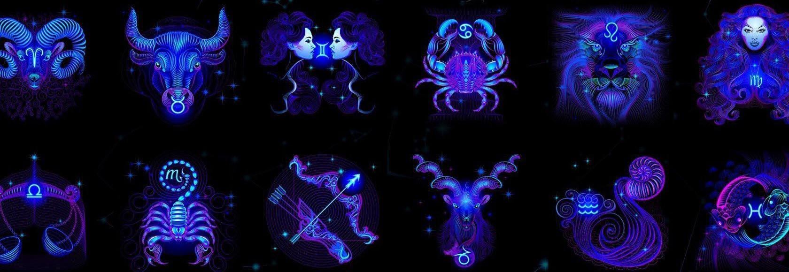
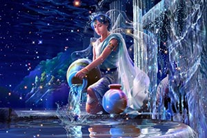
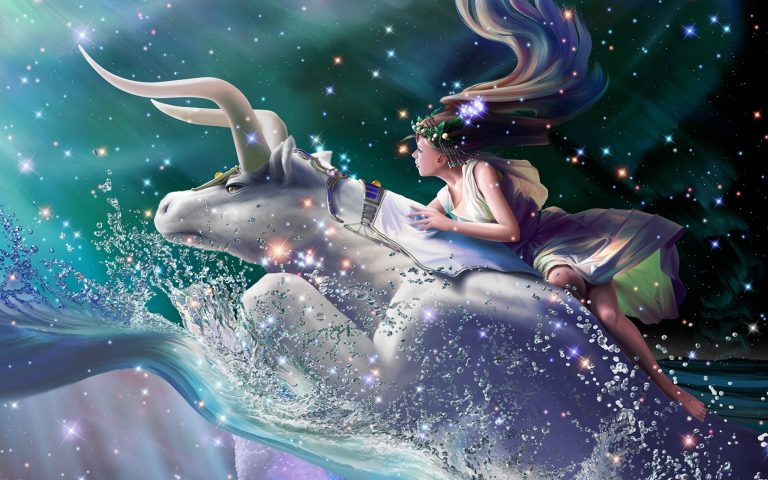
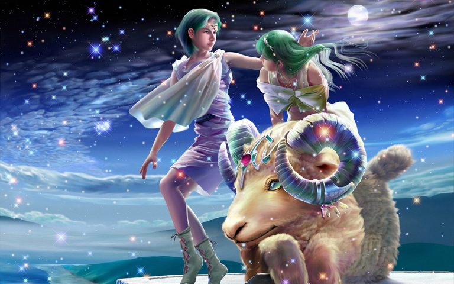
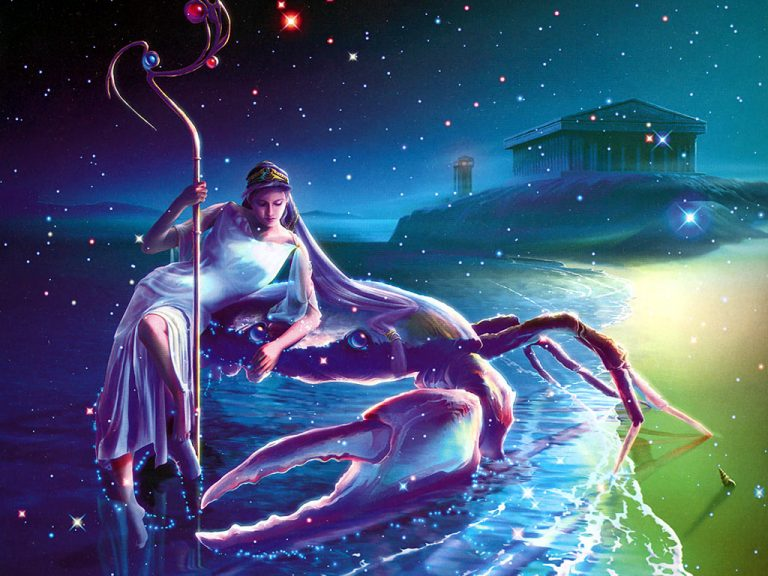
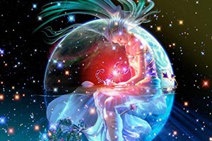
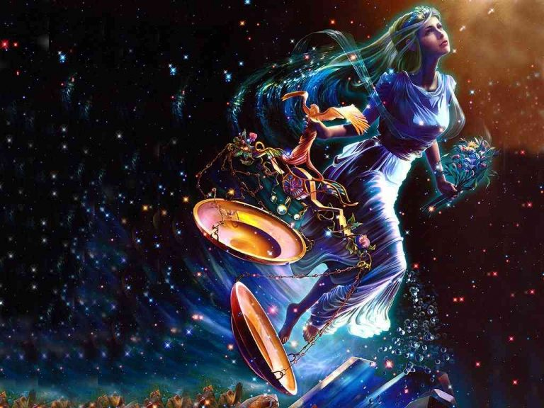
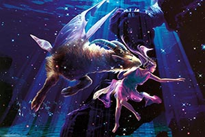
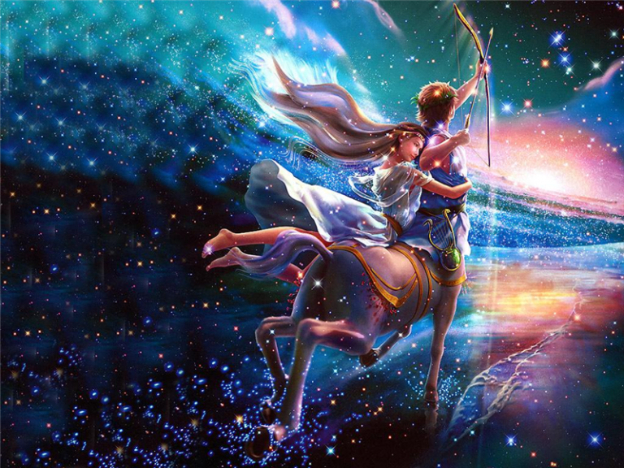

2. Ảnh Cung Song Ngư - Pisces (19/2-20/3)
Là hình ảnh hai con cá với màu sắc nổi bật, độc đáo được cách điệu thành nàng tiên cá vô cùng xinh đẹp và dễ thương.
1. Ảnh Cung Bảo Bình - Aquarius (20/1-18/2)
Là người đàn ông ( người đàn bà) tay ôm hai bình nước: một bình chứa sự sống tươi đẹp, mãnh liệt còn bình kia là sự tàn bạo, chết chóc.

4. Ảnh Cung Kim Ngưu - Taurus (21/4-21/5)
Là hình ảnh chiếc đầu bò đực hướng về hướng Nam – Nơi hội tụ những vì sao sáng nhất.

3. Ảnh Cung Bạch Dương - Aries (21/3-20/4)
Là hình ảnh biểu tượng của chòm sao Bạch Dương chính là cặp sừng lớn của chú cừu.

6. Ảnh Cung Cự Giải - Cancer (22/6-22/7)
Là là bộ càng cách điệu của con cua.dsd jdhs jkdsa khdsh khdas

5. Ảnh Cung Song Tử - Gemini (22/5-21/6)
Là ảnh 2 cậu bé đứng cạnh nhau. Theo truyền thuyết thì đó là hai anh em Castor và Pollux.
8. Ảnh Cung Xử Nữ - Virgo (23/8-23/9)
Là người con gái trinh nguyên với ánh nhìn xa xăm về nơi chôn rau cắt rốn.
7. Ảnh Cung Sư Tử - Leo (23/7-22/8)
Là hình ảnh cái đầu hoặc chú Sư Tử được cách điệu.
10. Ảnh Cung Bọ Cạp - Scorpius (24/10-22/11)
Là hình ảnh con bọ cạp – loài động vật khiến người ta sợ hãi thường sống ở rừng rậm hoang vu.

9. Ảnh Cung Thiên Bình - Libra (24/9-23/10)
Là Chiếc cân công lý. Nó dùng để cân đo khối lượng của vật chất. Hai bàn cân đại diện cho chòm sao Thiên Bình.

12. Ảnh Cung Ma Kết - Capricorn (22/12-19/1)
Được thể hiện qua đầu của con dê.

11. Ảnh Cung Nhân Mã - Sagittarius (23/11-21/12)
Là hình ảnh mũi tên cung sắc và nhọn.
